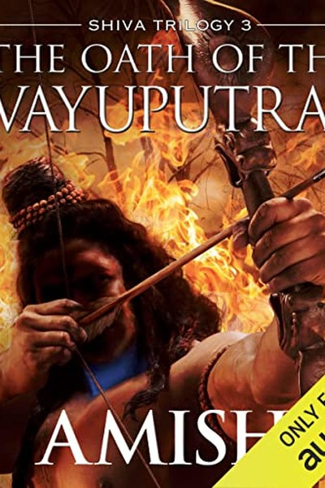

Library › Power & Strategy
The Oath of the Vayaputras — Summary & Key Lessons

The final war is always with yourself.
📖 OPEN THE FULL INTERACTIVE BREAKDOWN →🌐 Read it in Hindi, Hinglish, Gujarati, Tamil & 22 more languages — free, with audio.
💡 The Big Idea
The finale of the Shiva Trilogy brings every thread together: Shiva must decide whether to fight the final war against the evil Emperor Daksha, knowing the war itself may be part of a larger design. The book's core ideas: the greatest power is the power to choose one's own story; evil is often ordinary people doing 'reasonable' things within a corrupt system; and the ultimate victory is not defeating your enemy but freeing yourself from the game they designed. Amish closes with the most personal question of all — what do you do when the price of doing right is everything you have?
🧠 The 6 Key Lessons
Lesson 1: The Final War Is Often With Yourself
Part 1: The Gathering
As the armies gather, Shiva's hardest battles are internal — doubt, loss, the weight of every choice that led here. Amish's lesson: before the external war, there is always an internal one, and the person who wins the internal war is unbeatable outside. The doubts, the second-guessing, the fear of the cost — these are the real enemies. The leader who has settled their own questions fights cleanly; the one who hasn't fights with one hand tied. Do the inner work before the outer battle demands it.
📖 Example: Shiva enters the final war carrying grief, guilt and doubt — and every moment of hesitation on the battlefield is the internal war leaking outward. His victories come only when he resolves the inner question first. Read the full example →
⚡ Do this: Before your next big challenge, write your three biggest doubts about yourself. Answer each with evidence from your past. Settle the inner war first.
Lesson 2: Evil Is Ordinary: The Banality of Cruelty
Part 2: The Enemy
Amish refuses to make Daksha a cartoon villain — the emperor is a man with reasons, beliefs and a twisted sense of duty. The lesson is the most uncomfortable in the trilogy: evil is rarely dramatic; it is ordinary people doing 'sensible' things within a corrupt frame — the accountant who obeys, the soldier who follows, the citizen who looks away. The defence is vigilance about the frame itself: every time you hear 'this is just how it's done', a small piece of your conscience is on the line. Cruelty flourishes in the space between 'it's my job' and 'it's wrong'.
📖 Example: Daksha's cruelty is consistently framed as 'necessary order' — and the system around him accepts it precisely because everyone has a reason, a role and a justification. No one is the villain; everyone is the machine. Read the full example →
⚡ Do this: Notice one 'this is just how it's done' moment in your workplace or life this week. Ask: 'If this is wrong, who would notice?' — and answer honestly.
Lesson 3: The Design Within the Design: Question the War Itself
Part 3: The Revelation
The trilogy's twist: even the 'good' war against evil serves a hidden design — Shiva is being played by a larger game, and his 'choice' to fight may itself be engineered. Amish's lesson: the most sophisticated manipulation makes you believe you chose. The defence is not paranoia but self-audit: who benefits from my choices? Who designed the options I'm choosing between? The truly free person doesn't just choose between given options — they question the menu itself. Sometimes the most powerful move is refusing to play the game you were handed.
📖 Example: Shiva discovers that his entire heroic journey — every battle, every alliance — fits a pattern designed by forces he never saw. His freedom begins the moment he sees the design and asks: whose game is this? Read the full example →
⚡ Do this: Map one major choice you're facing. List who benefits from each option. If one player benefits from every option, you're in their game — name it.
Lesson 4: Mercy Is Strategic, Not Soft
Part 4: The Battle
In the war's turning points, Amish shows mercy as a weapon: the enemy who is offered a way out fights less desperately; the ally who is spared becomes loyal; the cycle that is broken stays broken. The lesson: mercy is not weakness — it is the strategic choice to end the enemy's incentive to fight to the death. The leader who offers a dignified exit reduces resistance; the one who offers only destruction guarantees it. Compassion, used deliberately, is one of the most efficient tools of power.
📖 Example: When Shiva spares enemies who could have been killed, the spared become witnesses to his justice — and the army's will to fight dissolves faster than any massacre could achieve. The mercy was the strategy. Read the full example →
⚡ Do this: In one current conflict, identify the 'dignified exit' you could offer the other side. Offer it — and watch the resistance change.
Lesson 5: The Legacy of the Warrior: What You Leave Behind
Part 5: The Sacrifice
The trilogy ends with Shiva facing the cost of his choices — the people he couldn't save, the normal life he gave up, the legacy he'll leave. Amish's lesson: the warrior's true legacy is not the battles won but the systems left standing — the peace that outlasts the sword. Before any big fight, ask what will remain when you're gone: a monument to your victories or a structure that keeps working without you? Build the second. The greatest victory is making yourself unnecessary.
📖 Example: Shiva's final acts are about the world after him — the institutions, the truths, the precedents that will keep people safe when his strength is gone. The battle was the means; the legacy was the point. Read the full example →
⚡ Do this: Write what you want to leave behind in 10 years — not achievements, but systems, people and truths. Take one action this week that builds the legacy, not the monument.
Lesson 6: Faith Is Action Without Guarantee
Part 6: The Leap
The trilogy's final leap: Shiva acts on faith — doing the right thing without any guarantee of success, because the alternative is unlivable. Amish's closing lesson: at the deepest level, all meaningful action requires faith — the willingness to commit without a guarantee. The person who waits for certainty never acts; the person who acts on principle accepts that the outcome is not fully in their control. This is not naivety — it is the courage to do your part of the equation and trust the rest. Faith is action without guarantee, and it is the only kind of action that changes anything.
📖 Example: Shiva's last battle is fought without certainty of victory — he fights because not fighting is impossible. The outcome is in larger hands; the choice is entirely his. That is the whole lesson. Read the full example →
⚡ Do this: Identify one right action you've postponed because the outcome isn't guaranteed. Take it this week — act on principle, and let the outcome be what it is.
✅ 5-Step Action Plan
- Write and answer your three biggest self-doubts before the next challenge.
- Notice one 'just how it's done' moment and question the frame.
- Map who benefits from each of your current options — find the game's author.
- Offer a dignified exit in one current conflict.
- Take one right action this week without any guarantee of outcome.
⚠️ When This Doesn't Work
Amish's 'war is the failure of every other solution' is the most anti-war Indian epic ever written — and Kurukshetra is the proof inside the genre: the Mahabharata's war, like the Vayaputra war, was optional at every step — peace was offered, rejected, offered again — and the war that 'had to happen' destroyed the generation that chose it. The caveat: Amish's own books keep returning to war because war sells — but the lesson his stories keep teaching is that the leaders who claim 'war is inevitable' are usually the ones who made it so. The oath of the warrior is not to fight well; it is to exhaust every alternative first.
💀 The Graveyard Proves It
⚔️ The Kurukshetra War — The War Everyone Wanted That Destroyed Everyone Who Wanted It. Burn: 18 days, millions dead — every family on both sides lost someone irreplaceable. Read the full case study →
💬 Best Quotes from The Oath of the Vayaputras
- “The final war is always with yourself — win that one first.”
- “Evil is ordinary people doing 'sensible' things in a corrupt frame.”
- “Faith is action without guarantee — and it is the only action that changes anything.”
Interactive version: mark lessons as read, listen in your language, share quote cards.